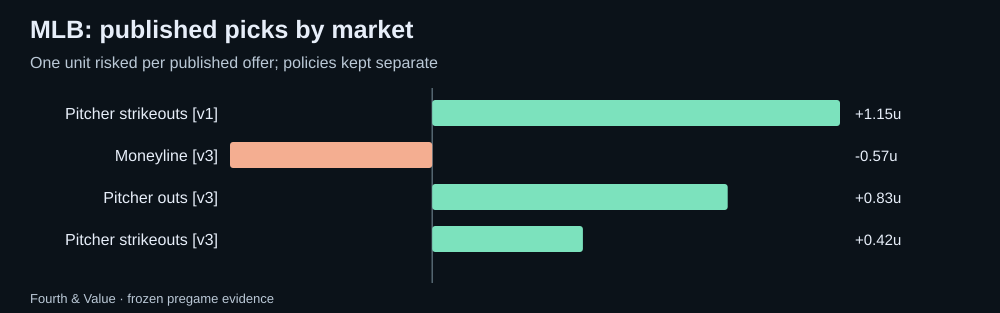

Fourth & Value · Weekly review
MLB weekly recap: 2026-10-05 to 2026-10-11
MLB saved picks and forecasts graded against official results, with market comparisons, unresolved outcomes and the next watchlist.
What this week can tell us
Partial full-board archive coverage: saved game snapshots begin 2026-10-07. The full-board sample has 7 games with saved pregame quotes; 7 have official results available. Separately, 8 published morning picks cover 5 games; 5 of those games have official results. These are archived samples, not a claim to cover every league game.
The strongest relative probability score was pitcher outs (10 observations); the weakest was game total (5 observations). These rankings describe this sample; even the strongest market may trail sportsbook probabilities.
Published morning picks
Only the final morning edition for each Eastern date is counted. One unit risked at each published price; pushes return the stake. Unresolved picks are excluded from ROI. Policy versions stay separate.
| Policy | Market | W–L–push | Net units | ROI | Unresolved |
|---|---|---|---|---|---|
| morning-edition-1 | Pitcher strikeouts | 1–0–0 | +1.15 | 115.0% | 0 |
| morning-edition-3 | Moneyline | 1–2–0 | -0.57 | -19.0% | 0 |
| morning-edition-3 | Pitcher outs | 1–0–0 | +0.83 | 83.3% | 0 |
| morning-edition-3 | Pitcher strikeouts | 2–1–0 | +0.42 | 14.2% | 0 |

Full-board market results
One most-offered paired line per game, player and market from the final saved pregame snapshot. O/U columns count over / under / push; team markets count home win or cover / away / push. These are market outcomes, not a strategy return.
| Market | Over or home / other / push | Unresolved | Brier model / market (n) | Mean error model / line (n) |
|---|---|---|---|---|
| Batter hits | 70 / 57 / 0 | 5 | 0.2257 / 0.2364 (80) | 0.54 / 0.61 (80) |
| Batter RBIs | 32 / 91 / 0 | 1 | 0.1547 / 0.1587 (79) | 0.46 / 0.54 (79) |
| Batter total bases | 54 / 70 / 0 | 4 | 0.2392 / 0.2407 (79) | 1.06 / 0.93 (79) |
| Moneyline | 2 / 5 / 0 | 0 | 0.2804 / 0.2507 (6) | — |
| Pitcher outs | 6 / 6 / 0 | 0 | 0.2420 / 0.2725 (10) | 2.73 / 3.20 (10) |
| Pitcher strikeouts | 6 / 6 / 0 | 0 | 0.2189 / 0.2319 (10) | 1.70 / 1.60 (10) |
| Spread / run line | 2 / 5 / 0 | 0 | 0.3308 / 0.2994 (6) | — |
| Game total | 2 / 4 / 1 | 0 | 0.2923 / 0.2596 (5) | 4.23 / 3.58 (6) |
Forecast quality
Across 275 matched non-push observations in 6 games, model Brier was 0.2142, versus market 0.2186. Lower is better. The game-block 95% interval for model minus market Brier is -0.0099 to +0.0035.
Probabilities are compared on the same non-push outcomes after conditioning the model on non-push. Missing forecasts stay missing. Error comparisons use matched observations only. Small samples and correlated markets limit what a strong week can prove.
Next week's watchlist
- Milwaukee Brewers @ Los Angeles Dodgers: saved model 8.84, line 7.5, gap +1.34. Snapshot Oct 14, 2026 at 07:07 AM EDT.
These are dated model-market disagreements to research, not validated edges. Check lineups, availability and current prices.
Evidence and limitations
participation unconfirmed: 10
Official nonparticipants, unsupported contracts and missing statistics are unresolved, never automatic zeroes or winning unders. Standard full-game settlement is assumed; sportsbook exceptions require separate review. MLB pitcher props require an official starting appearance. Team totals are not part of the supported archive. Results may be revised when official feeds are corrected.
Download every graded row and source snapshot · Current MLB board · How updates work · All recaps